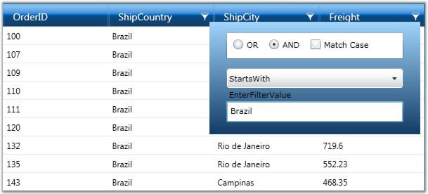
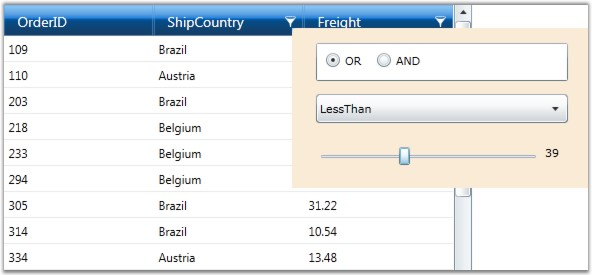

This feature provides advanced filtering options for the end-user. It overrides the default filter and displays an advanced filter drop-down, which lists the available filter operators for the respective filtering column and provides a text box, where the user is allowed to type the filter string. It exhibits a dynamic filtering mechanism by applying filter as the characters are typed.
APIs Used
This advanced filter pane comes in following two forms.
· GridDataTextFilteringPane, which can be used with any column type
· GridDataInt32SliderFilteringPane, which works only with integer columns
Filter Operators
The filter combo is the place where you get the available list of filter operators supported for the corresponding column type. The following table provides the list of filter choices for each column type.
|
Column Type |
Description |
|
String |
· StartsWith · EndsWith · Contains · Equals · NotEquals |
|
Int32 |
· LessThan · LessThanOrEqual · GreaterThan · GreaterThanOrEqual · Equal · NotEqual |
The GridDataTextFilteringPane, which is common to all column types, associate appropriate filter choice list according to the type of the column. When GridDataInt32SliderFilteringPane is used, the filter combo is always loaded with Int32 filter choices.
Clearing Filter
To clear any filter, you can simply erase the characters from filter text box. If you are using SliderFilteringPane, select the “None” option from the filter combo in order to clear the filter.
Customization Options
The Filtering Pane classes provide different customization properties which will assist you to customize the filtering pane. These properties are described below:
|
Customization Property |
Description |
|
Background |
Brush for filter pane background |
|
Foreground |
Brush for filter pane foreground |
|
PredicateType |
Specifies the predicate type: OR (or) AND |
|
CurrentFilterType |
Specifies the filter operator to be used for the filter column |
|
MatchCase |
Boolean property; when true, performs case-sensitive filtering |
The filtering panes are optional. It is possible to enable the filtering panes feature in few specific columns and allow other columns to use the default filter.
To enable this feature, you can simply attach an object of the desired filtering pane to the corresponding visible column. The columns that do not have this specification will use the default filtering mechanism. It is obvious that the AllowFilter property of the visible column should be set to true in both the cases.
Example
Let us see some sample code snippets that sets up the two kinds of filtering panes.
|
[XAML]
<syncfusion:GridDataControl x:Name="dataGrid" ShowAddNewRow="False" AutoPopulateColumns="False" AutoPopulateRelations="False" ItemsSource="{StaticResource orderSource}" ShowColumnOptions="True"> <syncfusion:GridDataControl.VisibleColumns> <syncfusion:GridDataVisibleColumn MappingName="OrderID"/>
<!--Frieght column using Slider Filtering Pane.--> <syncfusion:GridDataVisibleColumn MappingName="Freight" AllowFilter="True"> <syncfusion:GridDataVisibleColumn.FilterPane> <syncfusion:GridDataInt32SliderFilteringPane /> </syncfusion:GridDataVisibleColumn.FilterPane> </syncfusion:GridDataVisibleColumn>
<!--ShipCountry column using Text Filtering Pane with the Foreground and PredicateType properties set.--> <syncfusion:GridDataVisibleColumn MappingName="ShipCountry" AllowFilter="True"> <syncfusion:GridDataVisibleColumn.FilterPane> <syncfusion:GridDataTextFilteringPane IsThemed="True" Foreground="Black" PredicateType="And" /> </syncfusion:GridDataVisibleColumn.FilterPane> </syncfusion:GridDataVisibleColumn>
<!--ShipCountry column using Text Filtering Pane with the Background and CurrentFilterType properties set.--> <syncfusion:GridDataVisibleColumn MappingName="ShipCity" AllowFilter="True"> <syncfusion:GridDataVisibleColumn.FilterPane> <syncfusion:GridDataTextFilteringPane IsThemed="False" Background="Orange" CurrentFilterType="GreaterThan" /> </syncfusion:GridDataVisibleColumn.FilterPane> </syncfusion:GridDataVisibleColumn> </syncfusion:GridDataControl.VisibleColumns> </syncfusion:GridDataControl> |

Figure 122: Text Filtering Pane

Figure 123: Int32 Slider Filtering Pane